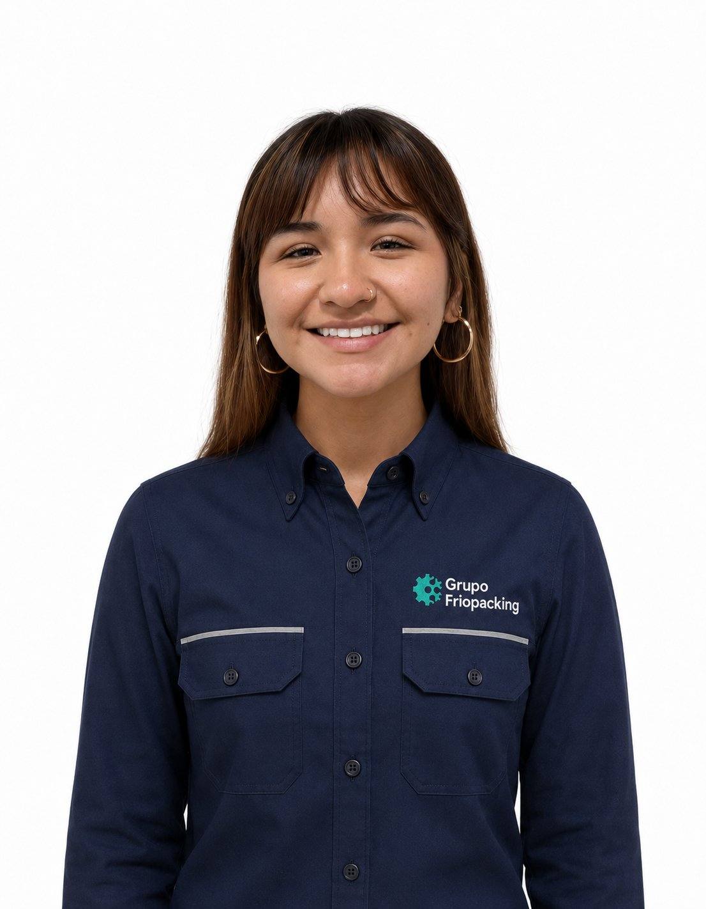

Laura Rojas · Trainee de Refrigeración Industrial
01 / 06 / 2026 — 05 / 06 / 2026
Durante esta primera semana tuve la oportunidad de conocer distintas áreas de FrioPacking — ingeniería, operaciones, finanzas y tecnología — y comprender cómo estas dimensiones se integran para generar soluciones de valor en la industria de refrigeración industrial. A través de reuniones con líderes de la empresa, capacitaciones y actividades prácticas, construí una visión inicial del negocio y sus oportunidades.
Ver resumen ejecutivo ↓
Estudiante de Ingeniería Biomédica en Boston University con concentración en Innovación Tecnológica. Becaria Posse Foundation. Crecí en Perú y llevo más de diez años en Estados Unidos, lo que me ha dado una perspectiva global sobre tecnología, innovación y emprendimiento.
Selecciona cada día para ver actividades, aprendizajes y reflexión.
Cuatro dimensiones de conocimiento exploradas durante la semana.
Líderes con quienes tuve la oportunidad de interactuar durante la semana.
Conclusiones que condensan los aprendizajes más significativos de la semana.
"La ingeniería no consiste en aplicar fórmulas, sino en desarrollar soluciones para problemas que muchas veces no tienen una respuesta inmediata."
"La confianza y la honestidad son fundamentales para construir relaciones duraderas con los clientes y sostener el crecimiento de la empresa."
"Las organizaciones pueden enfrentar dificultades, aprender de sus errores y salir fortalecidas cuando cuentan con liderazgo y equipos comprometidos."
"La IA amplifica la capacidad de análisis y aprendizaje, pero su verdadero valor depende de cómo las personas la utilizan estratégicamente."
Esta primera semana en FrioPacking permitió conocer una industria completamente nueva y construir una visión más amplia de cómo funciona una empresa de ingeniería. Lo que más llamó la atención fue cómo operaciones, finanzas, liderazgo e innovación trabajan juntas para alcanzar un objetivo común.
La actividad del business case fue especialmente valiosa: permitió aplicar herramientas de inteligencia artificial en un contexto empresarial real, desarrollando una propuesta estructurada en equipo dentro de una sola sesión.
Algo que destacó de FrioPacking fue su cultura de colaboración. Desde el primer día fue evidente la disposición del equipo para compartir conocimiento y trabajar hacia objetivos comunes. Las capacitaciones y el acceso directo a líderes de distintas áreas demuestran que la empresa se preocupa también por el crecimiento de sus colaboradores.
Objetivos planificados para continuar el practicum.
Acompañar al equipo en visitas planificadas para observar la dinámica operativa en terreno y las relaciones comerciales en acción.
Estudiar la arquitectura tecnológica, el modelo de negocio y los retos de escalabilidad de FrioMamut como producto IoT.
Integrarse en el seguimiento de proyectos reales para aplicar conceptos de sistemas de refrigeración con el equipo técnico.
Identificar una oportunidad de mejora dentro de la organización y estructurar una propuesta que integre ingeniería, tecnología y estrategia.